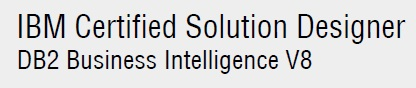

<div class="home">

My skills include Java (JEE), Java frameworks, .NET(C#), SQL Development, MS SQL Server, Oracle DB, DB2, Microservices, Cloud (AWS, Azure and Google), Serverless, talend ESB, Mule ESB, Oracle JCAPS, Apache Camel, CI/CL, Testing
<h4>Certificates</h4>  
<table>
	<tr>
		<td></td>
		<td width="50%">IBM Solution Designer</td>
		<td width="20%">Download transcript</td>
	</tr>
	<tr>
		<td></td>
		<td width="50%">IBM DB2 DBA Linux, Unix & Windows</td>
		<td width="20%">Download transcript</td>
	</tr>
	<tr>
		<td></td>
		<td width="50%">Microsoft Certified Professional (C#)</td>
		<td width="20%">Download transcript</td>
	</tr>
</table>
<br>
<h4>Skill Cloud</h4>  

</div>
